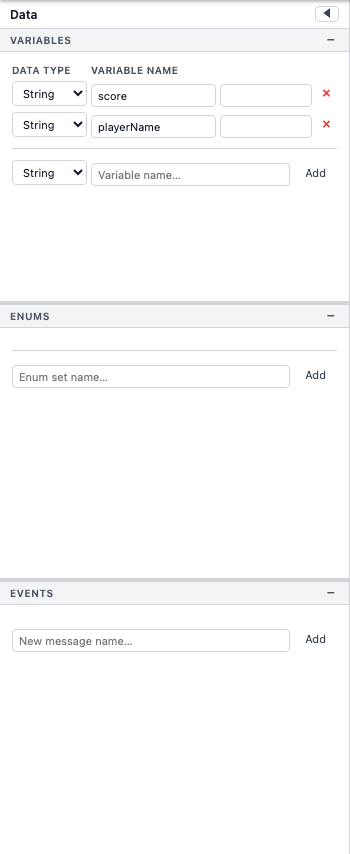
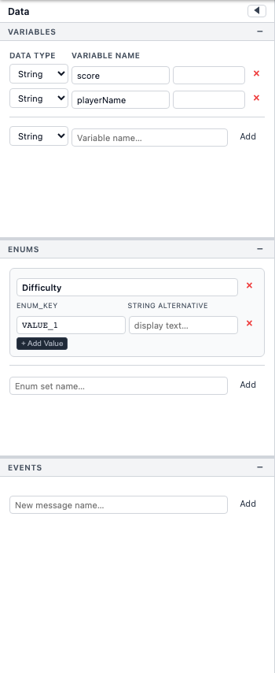

Variables, Enums & Events
The Data Panel on the left side of the editor organises your project's state into three tabs: Variables, Enums, and Events.

Variables
Variables store values that commands can read and write at runtime. Each variable has a name, a type, and a default value.
Supported Types
| Type | Example Default | Notes |
|---|---|---|
Boolean | false |
True / false toggle. |
Integer | 0 |
Whole number. |
Float | 0.0 |
Decimal number. |
String | "" |
Text value. |
Enum | (first key) | One of the keys defined in an Enum set. You must choose which Enum set the variable references. |
Example Variables Panel
Adding & Editing Variables
Click the + button at the top of the Variables tab to create a new variable. Select a variable in the list to edit its name, type, and default value in the detail area below. Press the delete button to remove a variable.
Enums

Enums let you define named sets of constants. Each enum has a name and a list of keys.
Key Format
Keys follow UPPER_SNAKE_CASE convention (e.g.
NORTH, SOUTH_EAST). Each key can also have an optional
string alternative — a human-readable label used at runtime
(e.g. the key SOUTH_EAST might display as
"South East").
Usage
Once an Enum set is defined, you can create a variable of type
Enum and bind it to that set. Commands like
Set Variable and
If / Else-If can then compare or assign
enum values.
Events
The Events tab holds a list of message names used for
communication between blocks. A message name is a simple string identifier such
as door_opened or level_complete.
- The Send Message command broadcasts a message name at runtime.
- Any block whose event trigger is
Message Receivedand whose message name matches will begin executing.
Add new events with the + button. Registered events appear in dropdowns throughout the editor so you can select them without typing.